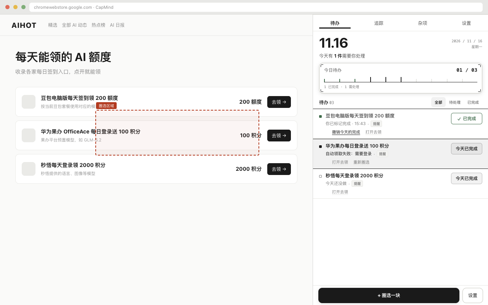
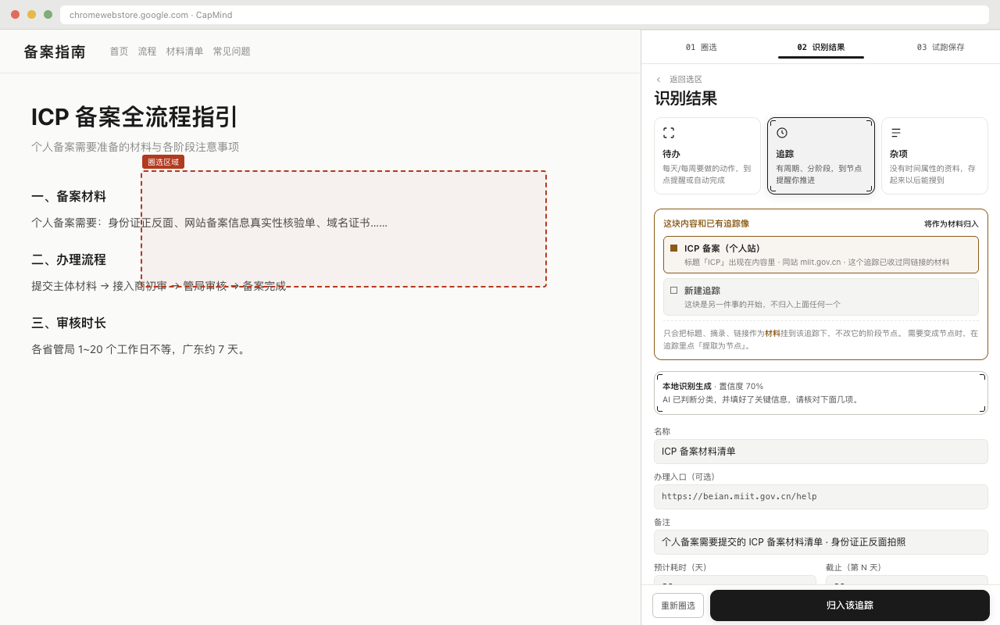
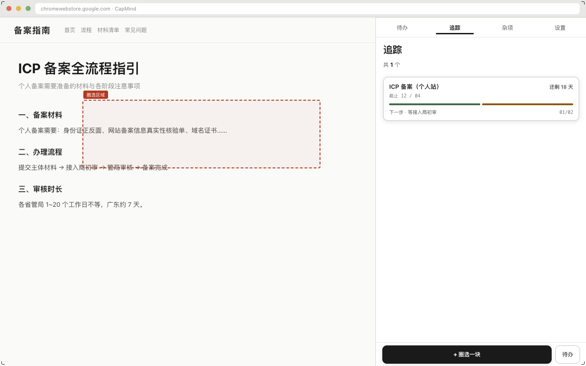
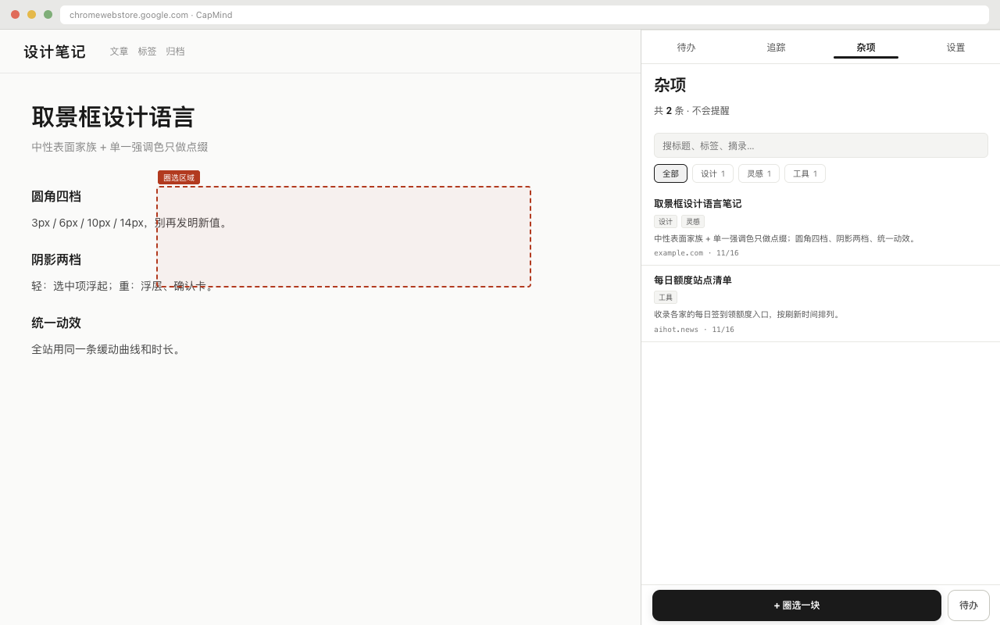

待办
每天或每周要做的动作
领额度、签到、打卡。到点提醒你，或者让扩展自己打开页面点一次。
- 自动执行失败就转提醒，不静默
- 完成后一键撤销，防手误
- 可导出备份，换设备不丢
浏览器端 · 信息收集助手
在任意网页上框选一块内容。CapMind 判断它是待办、追踪还是杂项，放进对应的桶里——到点提醒，或者只是安静地存好。
免费 · 无需账号 · 数据只存你自己的浏览器
不是让你先想好放哪儿。圈下来之后，CapMind 自己判断——拿不准就放杂项，不会乱归类。
领额度、签到、打卡。到点提醒你，或者让扩展自己打开页面点一次。
ICP 备案、资质申请、考试报名。AI 拆出阶段节点，到点逐个提醒。
链接、段落、一个突然的想法。不提醒，只存好，需要时按关键词找出来。
点工具栏图标，面板钉在浏览器右侧。在任意网页上都能用，不用切换窗口。
在页面上拖拽圈选。CapMind 读出标题、按钮和真实领取地址，预填好让你核对。
到点会在浏览器里提醒你。追踪类事项按阶段逐个提醒，直到你把它勾完。
黑白主题，克制的信息密度。没有花哨的动效，只有该出现的信息。



